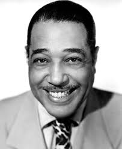

Duke Ellington
Duke Ellington was a jazz musician who performed at the Creole Palace, the nightclub inside the Douglas Hotel. In the course reading on San Diego’s Black history, a photo caption calls the hotel and club “the stop for Bessie Smith, Billie Holiday, the Mills Brothers, Duke Ellington.”
His life
Edward Kennedy Ellington was born in Washington, D.C., on April 29, 1899. The Smithsonian’s Archives Center says he moved to New York City in 1923 and worked at Harlem’s Cotton Club from 1927 to 1932, the years when his achievements began to attract national attention. He died on May 24, 1974, at age 75.
At the Creole Palace
The San Diego Reader says that in the 1930s and ’40s the country’s top Black entertainers, Ellington among them, “performed at the Creole Palace and stayed at the Douglas Hotel.” The Reader also says the owners, George Ramsey and Robert Rowe, patterned the Palace after Harlem’s Cotton Club, which had a whites-only policy. The Douglas did not. So Ellington played a San Diego club modeled on the Harlem club where he had worked, but without its whites-only policy.
Jump for Joy
In 1941, Ellington’s all-Black musical revue Jump for Joy was created and presented in Los Angeles. A WFIU radio program, shared by HPPR, says it opened at the Mayan Theater on July 10 and ran for 122 performances. Ellington said it “would take Uncle Tom out of the theater, and say things that would make the audience think.” In his 1973 memoir, he recalled the show as “No crying, no moaning, but entertaining, and with social demands as a potent spice.”
That is close to how the Black Joy reading describes Black joy as resistance: it “can mean knowing exactly what is wrong and choosing to create, celebrate, love, laugh, dance, or dream anyway.” The Music as Resistance reading adds that jazz became “both a musical tradition and a cultural expression of Black creativity.”
Sources
Course readings
- “Black History in San Diego & East County,” ETHN-107, Canvas.
- “Music as Resistance, From Spirituals to Hip-Hop,” ETHN-107, Canvas.
- “Black Joy,” ETHN-107, Canvas.
Outside sources
- Archives Center, National Museum of American History, Smithsonian Institution. “Duke Ellington Collection.” si.edu.
- “The Douglas Hotel: the Harlem of the West.” San Diego Reader, 1999. sandiegoreader.com.
- “Jump For Joy – Duke Ellington’s Celebratory Musical.” HPPR, February 26, 2024. Audio program by David Brent Johnson, WFIU. hppr.org.